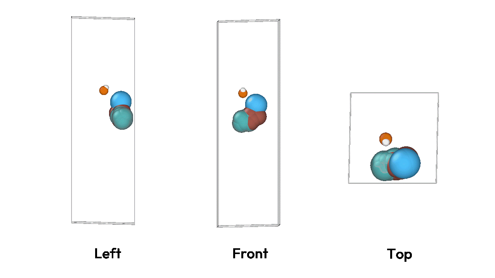
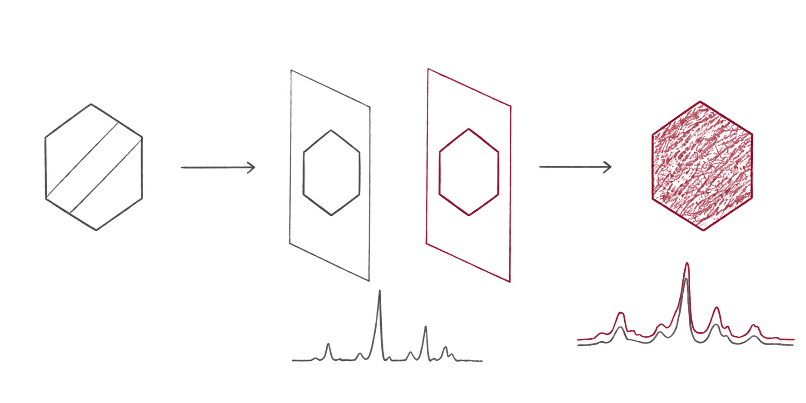
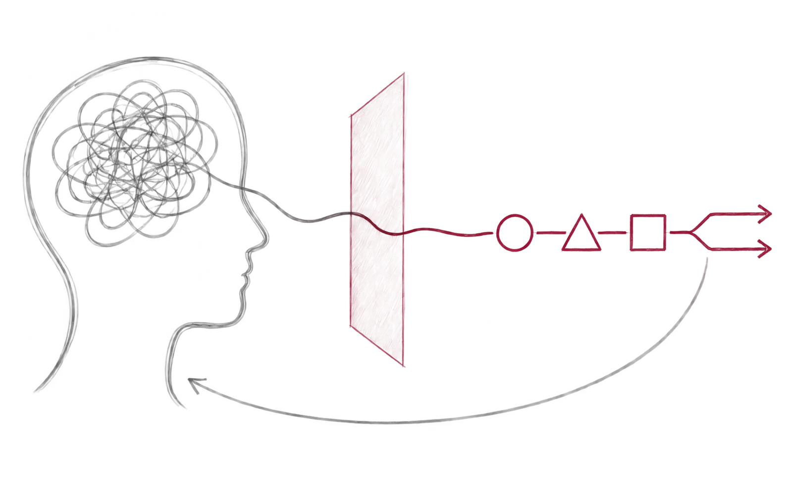
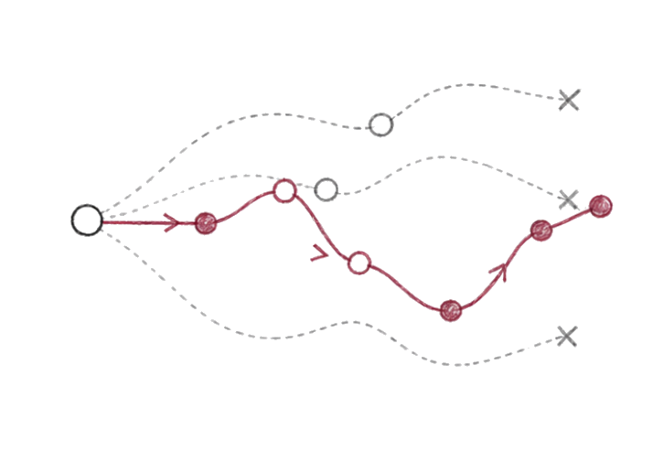

01–CatDiT
Generative Inverse Design of
Heterogeneous Catalysts
An equivariant latent diffusion framework
for the inverse design of periodic slab–
adsorbate structures

I often find myself asking:
Data are not always sufficient, experimental resources are limited,
and model predictions often come with uncertainty.
I want to explore how AI can navigate these constraints
and make more informed suggestions about what is worth trying next.
Ultimately, I hope to become a researcher who connects computational possibilities
with real-world experiments.
I’m always happy to connect with others who are exploring similar questions.
01–CatDiT
An equivariant latent diffusion framework
for the inverse design of periodic slab–
adsorbate structures

RESEARCH VISION

How can computational predictions
be grounded in real-world experiments?

How can AI translate researchers’
intent and intuition into scientific decisions?

Which candidate should we calculate
or test next to learn the most?
Questions, thoughts, or just a hello.
Anonymous—no name or email required.